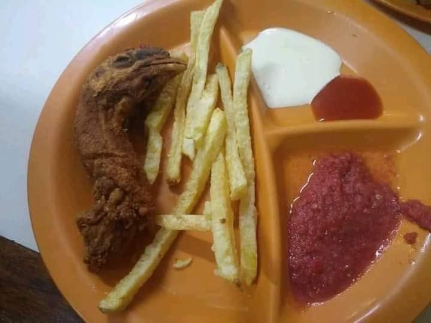

Home-made KFC meal 🍗

Description
A tasty concoction of chicken, chutney and chips supercharged with ketchup and milk.
Cooking time : 10 mins
Caloric intake per serving : 10
Ingredients (serves a single lucky person)
- 1 chicken head (preferably from a dead chicken)
- Freshly ordered chips from McDonalds
- 2 quarts neutral oil, for frying
- 1 ounce ketchup
- 1 ounce milk
- Leftover chutney from 5 years ago before grandma died.
Steps
- Preheat fryer to 350°F.
- Rethink your life choices.
- Dip chicken pieces in oil to lightly coat it.
- Fry chicken.
- Chicken is done when a meat thermometer inserted into the beak reads "HELP".
- Let chicken drain on a few paper towels when it comes out of the fryer.
- Serve hot with milk and ketchup.